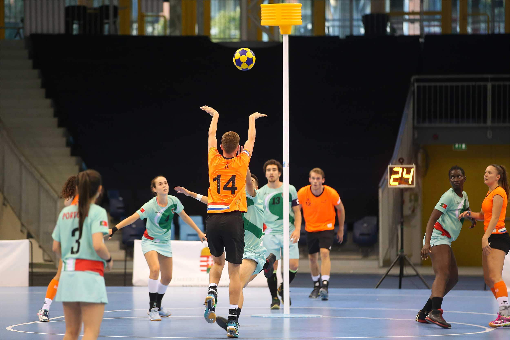

Korfbal
Korfbal is een van oorsprong Nederlandse sport, bedacht door de Amsterdamse onderwijzer Nico Broekhuysen in 1902. Het spel is gebaseerd op het Zweedse ringboll, zelf een variant van "vrouwenbasketbal", waarmee Broekhuysen op het Zweedse landgoed Nääs in 1902 in aanraking kwam. Korfbal kenmerkt zich door het feit dat het een van de weinige teamsporten is die niet is voorbehouden aan dames en heren apart: korfbal wordt van oudsher gemengd gespeeld.
Lees even de volgende teksten over Korfbal door ze aan te klikken. 😁